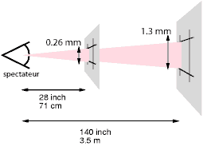
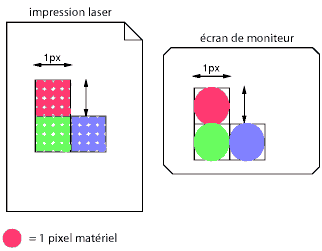

Contenu
Ce chapitre décrit une grammaire (avec les règles d' interprétation pour la compatibilité ascendante) commune à chaque version de CSS (y compris CSS2). Les versions futures adhéreront à cette syntaxe de base, même si d'autres contraintes syntaxiques peuvent s'y ajouter.
Ces descriptions sont normatives. Un complément des règles de grammaire normatives est aussi présenté dans l'annexe D.
Tous les niveaux de CSS, que ce soit les niveaux 1, 2 et les futurs niveaux, emploient la même syntaxe de base. Ceci permet une interprétation (mais alors incomplète) des feuilles de style produites selon des niveaux de CSS postérieurs à leur implémentation dans les agents utilisateurs. Les auteurs peuvent utiliser cette caractéristique pour créer des feuilles de style fonctionnant sur des agents utilisateurs plus anciens tout en employant les fonctionnalités apportées par les derniers niveaux de CSS.
Du point de vue lexical, les feuilles de style CSS se composent d'une série d'atomes. Leur liste pour CSS2 suit. Les définitions utilisent des expressions régulières à la façon de Lex. Les codes octaux se réfèrent à ISO 10646 ([ISO10646]). Tout comme pour Lex, en cas de correspondances multiples, la plus longue détermine l'atome.
| Atome | Définition |
|---|---|
| IDENT | {ident}
|
| ATKEYWORD | @{ident}
|
| STRING | {string}
|
| HASH | #{name}
|
| NUMBER | {num}
|
| PERCENTAGE | {num}%
|
| DIMENSION | {num}{ident}
|
| URI | url\({w}{string}{w}\)
|
| UNICODE-RANGE | U\+[0-9A-F?]{1,6}(-[0-9A-F]{1,6})?
|
| CDO | <!--
|
| CDC | -->
|
| ; | ;
|
| { | \{
|
| } | \}
|
| ( | \(
|
| ) | \)
|
| [ | \[
|
| ] | \]
|
| S | [ \t\r\n\f]+
|
| COMMENT | \/\*[^*]*\*+([^/][^*]*\*+)*\/
|
| FUNCTION | {ident}\(
|
| INCLUDES | ~=
|
| DASHMATCH | |=
|
| DELIM | tout autre caractère non filtré par les règles précédentes (exclure aussi les guillemets simples ou doubles) |
Ci-dessus, les macro-commandes entre accolades ({}) sont définies ainsi :
| Macrocommande | Définition |
|---|---|
| ident | {nmstart}{nmchar}*
|
| name | {nmchar}+
|
| nmstart | [a-zA-Z_]|{nonascii}|{escape}
|
| nonascii | [^\0-\177]
|
| unicode | \\[0-9a-f]{1,6}[ \n\r\t\f]?
|
| escape | {unicode}|\\[ -~\200-\4177777]
|
| nmchar | [a-zA-Z0-9-_]|{nonascii}|{escape}
|
| num | [0-9]+|[0-9]*\.[0-9]+
|
| string | {string1}|{string2}
|
| string1 | \"([\t !#$%&(-~]|\\{nl}|\'|{nonascii}|{escape})*\"
|
| string2 | \'([\t !#$%&(-~]|\\{nl}|\"|{nonascii}|{escape})*\'
|
| nl | \n|\r\n|\r|\f
|
| w | [ \t\r\n\f]*
|
Vient ensuite la syntaxe de base de CSS. Les paragraphes suivants indiquent la façon de les employer. L'annexe D décrit une grammaire plus restrictive et plus proche du langage de CSS2.
stylesheet : [ CDO | CDC | S | statement ]*;
statement : ruleset | at-rule;
at-rule : ATKEYWORD S* any* [ block | ';' S* ];
block : '{' S* [ any | block | ATKEYWORD S* | ';' ]* '}' S*;
ruleset : selector? '{' S* statement? [ ';' S* statement? ]* '}' S*;
selector : any+;
statement : property ':' S* value;
property : IDENT S*;
value : [ any | block | ATKEYWORD S* ]+;
any : [ IDENT | NUMBER | PERCENTAGE | DIMENSION | STRING
| DELIM | URI | HASH | UNICODE-RANGE | INCLUDES
| FUNCTION any* ')' | DASHMATCH | '(' any* ')' | '[' any* ']' ] S*;
Les atomes COMMENT n'apparaissent pas dans la grammaire (par souci de lisibilité), mais on peut les placer n'importe où entre les autres atomes.
L'atome S dans la grammaire ci-dessus indique un caractère blanc. Seuls les caractères "espace" (Code Unicode 32), "tabulation" (9), "nouvelle ligne" (10), "retour chariot" (13) et "nouvelle page" (12) peuvent en tenir lieu. Les autres caractères d'espacement similaires, comme "l'espace em" (8195) et "l'espace idéographique" (12288), n'en font pas partie.
Les mots-clés ont des points communs avec les identificateurs. On ne doit pas les mettre entre guillemets ("..." ou '...'). Ainsi :
red
est un mot-clé, mais :
"red"
n'en est pas un (c'est une chaîne). D'autres exemples à proscrire :
width: "auto"; border: "none"; font-family: "serif"; background: "red";
Les règles suivantes sont toujours vraies :
Noter que Unicode est équivalent code-à-code à ISO 10646 (voir [UNICODE] et [ISO10646]).
Premièrement, dans une chaîne, une barre oblique inverse suivie d'un caractère "nouvelle ligne" est ignorée (une chaîne n'est pas censée contenir la barre oblique inverse ni le caractère "nouvelle ligne").
Deuxièmement, elle annule le sens des caractères spéciaux pour CSS. Tout caractère (sauf un nombre hexadécimal) peut être masqué ce qui neutralise sa signification particulière. Par exemple, "\"" est une chaîne constituée d'un seul guillemet double. Les préprocesseurs de feuilles de style ne devraient pas les supprimer des feuilles de style car celles-ci en seraient changées.
Troisièmement, elle permet aux auteurs d'appeler des caractères qui serait difficile sinon à insérer dans un document. Dans ce cas, la barre oblique inverse s'emploie suivie d'au plus six chiffres hexadécimaux (0..9A..F) qui correspondent au code numérique d'un caractère ISO 10646 ([ISO10646]). Si à son tour un chiffre ou une lettre vient après ce nombre hexadécimal, il convient de préciser où celui-ci se termine. Deux façons d'y parvenir :
En fait, on peut combiner ces deux méthodes. Un seul caractère blanc est ignoré après un masquage hexadécimal. Noter que, pour obtenir un "vrai" espace après la séquence de masquage, il faudra aussi le masquer ou le doubler.
Quelle que soit la version de CSS, une feuille de style CSS consiste en une liste de déclarations (voir la grammaire plus haut). Elles sont de deux sortes : les règles-at et les jeux de règles. Les caractères blancs sont autorisés autour des déclarations.
Quand on utilise, dans cette spécification, des expressions comme "immédiatement avant" ou "immédiatement après", cela veut dire sans caractère blanc ou commentaires intermédiaires.
Les règles-at commencent par un mot-clé-at, composé du caractère "@" immédiatement suivi par un identificateur (ex. '@import', '@page').
Une règle-at consiste en tout ce qu'il y a jusqu'au premier point-virgule (;), celui-ci inclus, ou jusqu'au bloc suivant, selon le premier qui survient. Devant une règle-at inconnue de lui, un agent utilisateur CSS doit l'ignorer entièrement et poursuivre l'interprétation après celle-ci.
Les agents utilisateurs CSS2 doivent ignorer toute règle '@import' qui survient dans un bloc ou qui ne précède pas l'ensemble des jeux de règles.
Supposons, par exemple, un interpréteur CSS2 face à cette feuille de style :
@import "subs.css";
H1 { color: blue }
@import "list.css";
Le deuxième '@import' est invalide pour CSS2. L'interpréteur ignore celui-ci en entier, et la feuille de style se réduit dans les faits à :
@import "subs.css";
H1 { color: blue }
Dans l'exemple suivant, la deuxième règle '@import' n'est pas recevable parce qu'elle survient dans le bloc d'une règle '@media'.
@import "subs.css";
@media print {
@import "print-main.css";
BODY { font-size: 10pt }
}
H1 {color: blue }
Un bloc commence par une accolade gauche ({) et se termine par l'accolade droite (}) correspondante. On peut y mettre toutes sortes de caractères, sous la réserve que certains caractères aillent toujours par paires, celles-ci pouvant être imbriquées. Il s'agit des parenthèses ( ), des crochets [ ] et des accolades { }. Les guillemets simples (') et double (") doivent aussi aller par paires, leur contenu étant considéré alors comme une chaîne. Voir L'atomisation plus haut pour la définition d'une chaîne.
Voici en exemple un bloc. Noter que l'accolade droite entre les guillemets doubles ne correspond pas à l'accolade ouvrante du bloc et que le deuxième guillemet simple est masqué, ce qui annule ainsi la correspondance avec le premier guillemet simple :
{ causta: "}" + ({7} * '\'') }
Noter que cette règle n'est pas valide pour CSS2, bien que correspondant à la définition d'un bloc donnée ci-dessus.
Un jeu de règles (qualifié aussi de "règle") se compose d'un sélecteur suivi par un bloc de déclaration.
Un bloc de déclaration (qui est représenté dans la suite du texte par {bloc}) commence par une accolade gauche ({) et se termine par l'accolade droite (}) correspondante. On doit placer entre celles-ci une liste de déclarations séparées par des points-virgules (;) ou, sinon, ne rien y mettre.
Un sélecteur (voir aussi le chapitre sur les sélecteurs) consiste en tout ce qu'il y a jusqu'à la première accolade gauche, celle-ci exclue. Un sélecteur est toujours accompagné d'un {bloc}. Quand un agent utilisateur ne peut interpréter un sélecteur (par exemple, parce que celui-ci est invalide pour CSS2), il doit de ce fait en ignorer le {bloc}.
En CSS2, la virgule (,) placée dans un sélecteur a un sens particulier. Cependant, comme on ne sait pas si celle-ci va prendre d'autres significations dans les versions ultérieures de CSS, si une partie du sélecteur comportait une quelconque erreur, la déclaration entière devrait être ignorée, même si le reste de celui-ci apparaissait valide pour CSS2.
Par exemple, comme le caractère "&" n'est pas un atome valide en CSS2, un agent utilisateur CSS2 doit ignorer la totalité de la deuxième ligne, et les éléments H3 ne prendront pas la couleur rouge :
H1, H2 {color: green }
H3, H4 & H5 {color: red }
H6 {color: black }
Voici un exemple plus complexe. Les deux premières paires d'accolades se trouvent dans une chaîne, elles ne délimitent pas la fin du sélecteur. Cette déclaration est donc valide pour CSS2 :
P[example="public class foo\
{\
private int x;\
\
foo(int x) {\
this.x = x;\
}\
\
}"] { color: red }
Une déclaration est : soit vide ; soit constituée d'une propriété, suivie du caractère deux-points (:) puis d'une valeur. Il peut y avoir des caractères blancs autour de chacun de ceux-ci.
En raison du mode de fonctionnement des sélecteurs, on peut regrouper les multiples déclarations qui se rapportent à un même sélecteur en les séparant par des points-virgules (;).
Ainsi, les règles suivantes :
H1 { font-weight: bold }
H1 { font-size: 12pt }
H1 { line-height: 14pt }
H1 { font-family: Helvetica }
H1 { font-variant: normal }
H1 { font-style: normal }
sont équivalentes à celle-ci :
H1 {
font-weight: bold;
font-size: 12pt;
line-height: 14pt;
font-family: Helvetica;
font-variant: normal;
font-style: normal
}
Une propriété est un identificateur. On peut utiliser pour sa valeur toutes sortes de caractères, sous réserve des parenthèses ("( )"), des crochets ("[ ]"), des accolades ("{ }") et des guillemets simples (') ou doubles (") qui doivent toujours aller par paires, les points-virgules en dehors d'une chaîne doivent être masqués. Les parenthèses, les crochets et les accolades peuvent être imbriqués. Les caractères entre des guillemets sont interprétés comme une chaîne.
La syntaxe des valeurs est spécifiée pour chacune des propriétés ; dans tous les cas, les valeurs sont construites à partir d'identificateurs, de chaînes, de nombres, de longueurs, de pourcentages, d'adresses URI, de couleurs, d'angles, de durées et de fréquences.
Un agent utilisateur doit ignorer une déclaration dont le nom de la propriété ou sa valeur est invalide. Chacune des propriétés CSS2 a ses propres restrictions syntaxiques et sémantiques sur les valeurs qu'elle accepte.
Prenons par exemple un interpréteur CSS2 et cette feuille de style :
H1 { color: red; font-style: 12pt } /* valeur invalide : 12pt */
P { color: blue; font-vendor: any; /* propriété invalide : font-vendor */
font-variant: small-caps }
EM EM { font-style: normal }
Dans la première ligne, la seconde déclaration comporte une valeur de '12pt' invalide, et dans la deuxième ligne, la deuxième déclaration contient une propriété non définie 'font-vendor'. L'interpréteur va ignorer celles-ci, réduisant la feuille de style dans les faits à la suivante :
H1 { color: red; }
P { color: blue; font-variant: small-caps }
EM EM { font-style: normal }
Les commentaires commencent par les caractères "/*" et se terminent par "*/". On peut les placer partout entre les atomes, leur contenu n'a aucune influence sur le rendu. On ne peut pas les imbriquer.
CSS permet aussi l'utilisation des délimiteurs SGML ("<!--" et "-->") à certains endroits, mais ne délimitent pas un commentaire en CSS. On les emploie aussi pour masquer les feuilles de style dans un document source HTML (dans l'élément STYLE) aux agents utilisateurs antérieurs à HTML 3.2. Voir la spécification HTML 4.0 ([HTML40]) pour plus d'informations.
Dans certains cas, les agents utilisateurs doivent ignorer une partie d'une feuille de style invalide. Cette spécification définit le terme ignorer, qui signifie l'examen de cette partie invalide par l'agent utilisateur (pour déterminer où celle-ci commence et se termine), tout en agissant comme si cette partie n'avait pas été là.
Pour permettre l'ajouts futurs de nouvelles propriétés et valeurs, les agents utilisateurs doivent suivre les règles suivantes en fonction des scénarios décrits ici :
H1 { color: red; rotation: 70minutes }
l'agent utilisateur la traitera comme si elle était :
H1 { color: red }
IMG { float: left } /* valide pour CSS2 */
IMG { float: left here } /* "here" n'est pas une valeur de 'float' */
IMG { background: "red" } /* les mots-clés ne sont pas entre guillemets en CSS2 */
IMG { border-width: 3 } /* on doit spécifier une unité à une valeur numérique */
un interpréteur CSS2 honorerait la première règle de la feuille de style et en ignorerait
les suivantes, comme si celle-ci avait été :
IMG { float: left }
IMG { }
IMG { }
IMG { }
L'agent utilisateur qui voudrait aller vers une conformité avec une future spécification CSS peut aussi suivre une, ou plusieurs, de ces autres règles-ci.
@three-dee {
@background-lighting {
azimuth: 30deg;
elevation: 190deg;
}
H1 { color: red }
}
H1 { color: blue }
La règle-at '@three-dee' n'est pas définie en CSS2. Ainsi, la règle-at (jusqu'à la troisième accolade droite incluse) est ignorée, et la feuille de style est réduite dans les faits à :
H1 { color: blue }
Quelques valeurs peuvent avoir le type entier (dénoté par <integer>) ou le type nombre (dénoté par <nombre>). Les nombres et les entiers sont seulement spécifiés en notation décimale. Un <entier> consistent un, ou plusieurs, chiffres de "0" à "9". A <nombre> peut être un <entier> ou encore zéro, ou plusieurs chiffres, suivi par un point (.) et un, ou plusieurs, chiffres. Les deux types pouvant être précédés par le signe "-" ou "+".
Noter que plusieurs propriétés, qui admettent comme valeur un entier ou un nombre, limitent en fait leurs valeurs dans une plage donnée, souvent à une valeur positive.
Les longueurs s'appliquent aux mesures horizontales et verticales.
Plusieurs valeurs décrites dans les sous-sections de cette section admettent incorrectement deux signes "+" ou "-" initiaux. Les longueurs, par exemple, sont décrites ainsi :
Une valeur de longueur (dénotée par <longueur> dans cette spécification) est formée d'un caractère de signe optionnel ('+' ou '-', '+' étant la valeur implicite), suivi immédiatement par un <nombre> (avec un point décimal ou non) et suivi immédiatement par un identificateur d'unité (ex. px, deg, etc.)
Cependant, le type <nombre> admettant déjà le signe "+" ou "-", la définition précédente implique la possibilité de se trouver avec deux caractères pour le signe. Bien que les types de valeurs suivants puissent accepter deux signes, ils sont destinés à n'avoir qu'un seul signe initial :
Certaines propriétés autorisent des valeurs de longueur négatives, mais cela peut compliquer le modèle de mise en forme, cela peut aussi dépendre des limites spécifiques des agents utilisateurs. Dans le cas où une valeur de longueur négative n'est pas reconnue, elle devrait être convertie à la valeur la plus proche qui le soit.
Il existe deux types d'unité de longueur : les relatives et les absolues. Les unités de longueurs relatives se rapportent à une autre propriété de longueur. Les feuilles de style qui en emploient seront plus facilement adaptable d'un média à un autre (par exemple d'un moniteur vers une imprimante laser).
Voici les unités relatives :
H1 { margin: 0.5em } /* em */
H1 { margin: 1ex } /* ex */
P { font-size: 12px } /* px */
L'unité 'em' correspond à la valeur calculée pour la propriété 'font-size' d'un élément donné. Sauf quand cette unité est spécifiée dans la propriété 'font-size' elle-même, auquel cas, elle se réfère à la taille de la police de l'élément parent. On peut l'utiliser pour des mesures de quantités verticales ou horizontales. (En typographie, on l'appelle aussi carré typographique ou corps).
L'unité 'ex' est définie par rapport à la valeur de la propriété 'x-height'. Cette valeur correspond à la hauteur du caractère "x" minuscule. Elle est définie même pour les polices qui n'en contiennent pas.
Ainsi :
H1 { line-height: 1.2em }
cette règle précise que la hauteur de ligne des éléments H1 sera 20 % plus grande que leur taille de police. À l'inverse :
H1 { font-size: 1.2em }
la taille de police des éléments H1 sera 20 % plus grande que la taille de police héritée par ceux-ci.
Les valeurs en 'em' et 'ex' se réfèrent à la valeur initiale de la propriété quand on les spécifie pour la racine de l'arbre du document (ex. "HTML" pour le langage HTML).
Les valeurs exprimées en pixel s'entendent relativement à la résolution
de l'appareil de visualisation, c.à.d. le plus souvent un moniteur. Dans le cas où la
densité de pixels de l'appareil de sortie est trop éloignée de celle d'un
moniteur typique, l'agent utilisateur devrait redimensionner les valeurs en pixel.
On recommande une valeur pour le pixel de référence
qui soit égale à l'angle visuel d'un pixel sur un appareil de densité 90 ppp
96 ppp situé à une longueur de bras du spectateur. Pour une longueur de bras nominale
de 28 pouces (71 cm), l'angle visuel serait de 0,0227 0,0213 degrés.
À cette distance, un pixel correspond à une taille d'environ 0,28 mm
0,26 mm (soit 1/96 pouce).
Une fois retranscrit par une imprimante laser, pour une lecture à moins d'une longueur de bras
(55 cm ou 21 pouces), celui-ci a une taille d'environ 0,21 mm. Avec une imprimante de résolution
300 ppp (point par pouce), il serait rendu en 3 points (0,25 mm) et, avec imprimante de 600 ppp, en environ
5 points.
Les deux illustrations suivantes montrent les conséquences de la distance de lecture et de la résolution d'un appareil sur la perception d'un pixel. Dans la première, une distance de lecture de 71 cm (28 pouces) correspond à un pixel de 0.26 mm, et une distance de 3.5 m (12 pieds) à un pixel de 1.3 mm.
 [D]
Dans la seconde, une aire de 1px par 1px est recouverte avec un seul point pour un appareil en basse résolution (un moniteur), alors que cette même surface nécessite 16 points pour un appareil en haute résolution (comme une imprimante laser en 400 ppp).
 [D]
Les éléments enfants n'héritent pas des valeurs relatives spécifiées pour leur parent ; ils en héritent (généralement) des valeurs calculées.
Dans les règles suivantes, la valeur calculée de 'text-indent' des éléments H1, enfants de l'élément BODY, sera de 36pt, et non 45pt.
BODY {
font-size: 12pt;
text-indent: 3em; /* c.à.d., 36 pt */
}
H1 { font-size: 15pt }
Les unités de longueurs absolues ne sont utiles que si les propriétés physiques du média de sortie sont connues. Voici les unités absolues :
H1 { margin: 0.5in } /* pouces */
H2 { line-height: 3cm } /* centimètres */
H3 { word-spacing: 4mm } /* millimètres */
H4 { font-size: 12pt } /* points */
H4 { font-size: 1pc } /* picas */
Si la valeur de longueur spécifiée n'est pas reconnue, les agents utilisateurs doivent en donner une valeur approchante
Une valeur de pourcentage (dénotée par <pourcentage> est formée d'un caractère facultatif pour le signe ('+' ou '-', '+' étant par défaut) immédiatement suivi par un <nombre> et immédiatement suivi par le caractère '%'.
Les valeurs de pourcentage sont toujours relatives à une autre valeur, par exemple une longueur. Chacune des propriétés qui admettent des pourcentages définit aussi la valeur à laquelle le pourcentage se rapporte. Cette valeur peut être celle d'une autre propriété du même élément, d'une propriété d'un ancêtre ou de la valeur issue du contexte de formatage (ex. la largeur d'un bloc conteneur). Quand une valeur de pourcentage est spécifiée pour une propriété de l'élément racine et que celle-ci est définie par rapport à la valeur héritée d'une propriété donnée, alors la valeur résultante est égale au produit de la valeur de pourcentage par la valeur initiale de cette propriété.
Les éléments enfants héritant (généralement) des valeurs calculées de leur parent, dans l'exemple suivant, les enfants de l'élément P hériteront d'une valeur 12 pt pour la propriété 'line-height', et non de la valeur en pourcentage (ici, 120 %) :
P { font-size: 10pt }
P { line-height: 120% } /* 120 % de 'font-size' */
Les URLs (Uniform Resource Locators, voir [RFC1738] et [RFC1808]) indiquent l'adresse d'une ressource sur le Web. Une nouvelle appellation destinée à identifier une ressource est l'URN (Uniform Resource Name). Les deux réunis forment ce qu'on nomme des adresses URI (Uniform Resource Identifiers, voir [URI]).
Les valeurs d'adresse URI dans cette spécification sont dénotées par <uri>. On utilise la notation fonctionnelle "url()" pour désigner les adresses URI dans les valeurs de propriétés, comme ici :
BODY { background: url("http://www.bg.com/pinkish.gif") }
Une valeur d'adresse URI est formée par les caractères 'url(' suivis par un caractère blanc facultatif, suivi par un guillemet facultatif simple (') ou double ("), suivis par l'adresse URI elle-même, suivie par un guillemet fermant simple ou double, s'il y a lieu, suivi par un caractère blanc facultatif et enfin par une parenthèse fermante ')'. Les guillemets doivent être de la même sorte.
Un exemple sans guillemets :
LI { list-style: url(http://www.redballs.com/redball.png) disc }
Les caractères parenthèse, virgule, les caractères blancs et les guillemets simples ou doubles qui apparaissent dans une adresse URI doivent être masqués par une barre oblique inverse, ex. '\(', '\)', '\,', etc.
Selon le type d'adresse URI, il doit aussi être possible d'écrire les caractères précédents sous la forme de masquage des adresses URI, où "(" = %28, ")" = %29, etc., tel que décrit dans [URI].
Pour créer des feuilles de style modulaires indépendantes de l'adresse absolue d'une ressource, les auteurs peuvent employer des adresses URI relatives. Les adresses URI relatives (décrites dans [RFC1808]) se résolvent en adresses URI complètes à partir d'une adresse URI de base. L'algorithme normatif de ce processus est défini au chapitre 3 de RFC 1808. Pour les feuilles de style CSS, l'adresse URI de base correspond à celle de la feuille de style, et non à celle du document source.
Supposons par exemple que la règle suivante :
BODY { background: url("yellow") }
se trouve dans une feuille de style désignée par l'adresse URI :
http://www.myorg.org/style/basic.css
L'arrière-plan de l'élément BODY dans le document source sera carrelé avec l'image issue de la ressource désignée par cette adresse URI :
http://www.myorg.org/style/yellow
La façon de gérer les adresses URI qui pointent vers des ressources non disponibles ou inappropriées peut varier d'un agent utilisateur à l'autre.
Les compteurs sont dénotés par des identificateurs (voir les propriétés 'counter-increment' et 'counter-reset'). On se réfère à la valeur d'un compteur au travers des notations 'counter(<identificateur>)' ou 'counter(<identificateur>, <list-style-type>)'. La valeur par défaut étant 'decimal'.
Pour référencer une séquence de compteurs imbriqués, on utilise les notations 'counters(<identificateur>, <chaîne>)' ou 'counters(<identificateur>, <chaîne>, <list-style-type>)'. Voir "Les compteurs imbriqués et leur portée" dans le chapitre sur le contenu généré.
En CSS2, on ne peut se référer aux valeurs des compteurs qu'avec la propriété 'content'. Noter que la valeur 'none' est admise pour <list-style-type> : 'counter(x, none)' résulte en une chaîne vide.
Voici une feuille de style qui numérote les paragraphes (P) pour chacun des chapitres (H1). Les paragraphes utilisent une numérotation en chiffre romains, suivis par un point et un espace :
P {counter-increment: par-num}
H1 {counter-reset: par-num}
P:before {content: counter(par-num, upper-roman) ". "}
Les compteurs qui sont hors du champ d'action d'une propriété 'counter-reset' sont considérés avoir été remis à zéro par la propriété 'counter-reset' de l'élément racine.
La liste des noms de mots-clés de couleur est : aqua, black, blue, fuchsia, gray, green, lime, maroon, navy, olive, purple, red, silver, teal, white et yellow. Ces 16 couleurs sont définies dans la spécification HTML 4.0 ([HTML40]). En complément de ces couleurs, les utilisateurs peuvent spécifier des mots-clés qui correspondent aux couleurs utilisées par certains objets de l'environnement de l'utilisateur. Consulter le chapitre sur les couleurs système pour plus d'informations.
BODY {color: black; background: white }
H1 { color: maroon }
H2 { color: olive }
On utilise le modèle de couleur RGB pour la spécification numérique des couleurs. Les exemples ci-dessous indiquent tous la même couleur :
EM { color: #f00 } /* #rgb */
EM { color: #ff0000 } /* #rrggbb */
EM { color: rgb(255,0,0) } /* intervalle entier 0 - 255 */
EM { color: rgb(100%, 0%, 0%) } /* intervalle flottant 0.0% - 100.0% */
Une valeur RGB en notation hexadécimale est formée d'un caractère '#' immédiatement suivi par trois ou bien six caractères hexadécimaux. La notation RGB en trois chiffres (#rgb) est convertie dans celle en six chiffres (#rrggbb) par réplication, et non par ajout de zéros. Par exemple, #fbo se transforme en #ffbb00. Ceci assure que la couleur blanche (#ffffff) puisse être spécifiée avec la notation courte (#fff) et que celle-ci soit indépendante de la profondeur de couleur de l'écran.
Une valeur RGB en notation fonctionnelle est formée par les caractères 'rgb(', suivis par une liste de trois valeurs numériques (soit trois entiers, soit trois pourcentages) séparées par des virgules et suivi par ')'. La valeur entière 255 correspond à 100 % et à f ou ff en notation hexadécimale : rgb(255,255,255) = rgb(100%,100%,100%) = #fff. Les caractères blancs sont permis autour de chacune des valeurs.
Toutes les couleurs RGB sont spécifiées dans l'espace de couleur sRGB (voir [SRGB]). La fidélité du rendu des couleurs peut varier d'un agent utilisateur à l'autre, mais l'emploi de sRGB définit une mesure objective et sans ambiguïté des couleurs, en accord avec des standards internationaux (voir [COLORIMETRY]).
Les agents utilisateurs conformes peuvent se limiter à appliquer une correction gamma dans leurs efforts à rendre les couleurs. L'espace sRGB spécifie un gamma d'affichage de 2.2 dans certaines conditions spécifique de vision. Les agents utilisateurs devraient adapter les couleurs données en CSS, en conjonction avec le rendu "naturel" du gamma d'un appareil de sortie, de manière, à produire un gamma effectif de 2.2. Voir le chapitre sur la correction gamma pour plus de détails. Noter que seules les couleurs spécifiées en CSS sont concernées, les images, par exemple, sont censées emporter leurs propres informations de couleur.
Les valeurs situées hors du gamut de l'appareil devraient être rognées : les valeurs de rouge, vert et bleu doivent être modifiées pour rester dans les limites supportées par l'appareil. Pour un moniteur CRT typique, dont le gamut est le même que celui de sRGB, ces trois règles sont équivalentes :
EM { color: rgb(255,0,0) } /* entier de 0 à 255 */
EM { color: rgb(300,0,0) } /* ramené à rgb(255,0,0) */
EM { color: rgb(255,-10,0) } /* ramené à rgb(255,0,0) */
EM { color: rgb(110%, 0%, 0%) } /* ramené à rgb(100%,0%,0%) */
D'autres appareils, dont les imprimantes, ont des gamuts différents de celui de sRGB ; certaines couleurs hors de la plage 0..255 de sRGB seront représentables (à l'intérieur du gamut de l'appareil), d'autres, bien que dans cette plage, seront hors du gamut de l'appareil et seront de ce fait rognées.
Remarque : Bien que les couleurs puissent avoir un impact informationnel important pour les documents, les rendant plus lisibles, merci de considérer le fait que certaines combinaisons de couleurs peuvent causer des difficultés aux utilisateurs qui ont des déficiences visuelles. Si vous utilisez une image de fond ou spécifiez une couleur d'arrière-plan, veuillez choisir des couleurs de premier plan en accord avec leur fond.
Les valeurs d'angles (dénotées par <angle> dans le texte) sont employées avec les feuilles de style auditives.
Elles sont formées d'un caractère de signe facultatif ('+' ou '-', '+' étant par défaut) immédiatement suivi par un <nombre> et immédiatement suivi par un identificateur d'unité d'angle.
Comme pour les longueurs, l'unité peut être omise si la valeur est "0" : on peut écrire "0deg" tout simplement "0".
Les identificateurs d'unité d'angle sont :
Les valeur d'angle peuvent être négatives. L'agent utilisateur devrait les normaliser dans la plage de 0 à 360 degrés. Par exemple, -10deg et 350deg sont équivalents.
Un angle droit, par exemple, fait '90deg' ou '100grad' ou '1.570796326794897rad'.
Les valeurs de durée (dénotées par <durée> dans ce texte) sont employées avec les feuilles de style auditives.
Elles sont formées d'un <nombre> immédiatement suivi par un identificateur d'unité de durée.
Comme pour les longueurs, l'unité peut être omise si la valeur est "0" : on peut écrire "0ms" tout simplement "0".
Les identificateurs d'unité de durée sont :
Les valeurs de durée ne peuvent pas être négatives.
Les valeurs de fréquence (dénotées par <fréquence> dans le texte) sont employées avec les feuilles de style auditives.
Elles sont formées d'un <nombre> immédiatement suivi par un identificateur d'unité de fréquence.
Comme pour les longueurs, l'unité peut être omise si la valeur est "0" : on peut écrire "0Hz" tout simplement "0".
Les identificateurs d'unité de fréquence sont :
Les valeurs de fréquence ne peuvent pas être négatives.
Par exemple, 200 Hz (ou 200 hz) est un son grave et 6 kHz (ou 6 khz) est un son aigu.
Les chaînes s'inscrivent entre des guillemets simples ou doubles. On ne peut pas mettre de guillemets doubles entre d'autres guillemets doubles, à moins de les masquer (ainsi, '\"' ou "\22"). De la même façon pour les guillemets simples ("\'" ou "\27").
"voici une 'chaîne'" "voici une \"chaîne\"" 'voici une "chaîne"' 'voici une \'chaîne\''
Une chaîne ne peut pas contenir directement un caractère nouvelle ligne. Pour cela, on emploie le caractère masqué "\A" (en notation hexadécimale, A est le caractère Unicode pour une nouvelle ligne, celui-ci est donc la représentation générique pour "nouvelle ligne" en CSS). Voir la propriété 'content' pour un exemple.
Il est possible de couper les chaînes pour les répartir sur plusieurs lignes, pour des raisons esthétiques ou autres, mais il faut dans ce cas masquer la nouvelle ligne elle-même avec une barre oblique inverse (\). Par exemple, les deux sélecteurs qui suivent sont les mêmes :
A[TITLE="un titre qui\
est assez court"] {/*...*/}
A[TITLE="un titre qui est assez court"] {/*...*/}
Une feuille de style CSS est une séquence de caractères issus du Jeu de Caractères Universel, Universal Character Set (voir [ISO10646]). Pour leur transport et leur stockage, ces caractères doivent être codés selon un codage compatible avec le jeu de caractères disponibles en US-ASCII (ex. ISO 8859-x, SHIFT JIS, etc.). Pour une bonne introduction aux jeux de caractères et leurs codages, consulter la spécification HTML 4.0 ([HTML40], chapitre 5). Voir aussi la spécification XML 1.0 ([XML10], chapitres 2.2 et 4.3.3, et l'Annexe F.
Quand une feuille de style est incorporée dans un document, comme avec l'élément STYLE ou l'attribut "style" en HTML, celle-ci partage le même codage de caractères que ce document.
Quand une feuille de style réside dans un fichier séparé, les agents utilisateurs doivent observer les priorités suivantes pour déterminer le codage des caractères du document (par ordre de priorité décroissant) :
Il ne peut y avoir qu'une règle @charset dans une feuille de style externe et elle doit survenir au tout début de celle-ci, aucun caractère ne devant précéder. Cette règle ne doit pas apparaître dans une feuille de style incorporée. Les auteurs spécifient le nom d'un codage après "@charset". Ce nom doit correspondre à celui d'un jeu de caractère inscrit dans les registres de l'IANA (voir [IANA] et aussi [CHARSETS] pour une liste complète de ceux-ci). Par exemple :
@charset "ISO-8859-1";
Cette spécification ne précise pas lesquels des codages de caractères un agent utilisateur doit reconnaître.
Noter que compter sur la construction avec @charset pose un problème théorique car on ne sait pas a priori la façon dont celle-ci est codée. En pratique, cependant, les codages les plus répandus sur Internet se basent sur les codages ASCII, UTF-16, UCS-4 ou (rarement) sur EBCDIC. Cela signifie en général que l'agent utilisateur est capable de détecter de façon sûre la famille des codages d'un document à partir de ses octets initiaux, ce qui lui permet ensuite d'en déterminer le codage exact.
Une feuille de style peut utiliser des caractères qui n'ont pas de représentation dans un codage donné. Ceux-ci doivent être écrits sous la forme d'appels masqués des caractères ISO 10646. C'est la même méthode que pour les appels de caractères numériques dans les documents HTML ou XML (voir [HTML40], chapitres 5 et 25).
On ne devrait employer ce mécanisme que si on a affaire à un petit nombre seulement de ces caractères à masquer. Si la plus grande part du document y fait appel, alors les auteurs devraient employer un codage plus approprié pour celui-ci (ex. avec un document qui contient beaucoup de caractères grecs, les auteurs pourraient utiliser "ISO-8859-7" ou "UTF-8").
Les processeurs intermédiaires qui utilisent un codage différent peuvent traduire ces séquences de masquage en des séquences d'octets pour ce même codage. Néanmoins, il ne doivent pas modifier celles qui annulent le sens spécial d'un caractère ASCII.
Les agents utilisateurs conformes doivent faire correspondre correctement avec Unicode tous les caractères d'un codage donné qui sont reconnus (ou se comporter comme s'ils le faisaient).
Par exemple, un document transmis en ISO-8859-1 (Latin-1) ne peut pas contenir des lettres greques telles quelles : "κουρος" ("kouros" en grec) doit être écrit "\3BA\3BF\3C5\3C1\3BF\3C2".
Remarque : En HTML 4.0, les appels de caractères numériques sont interprétés dans les valeurs de l'attribut "style" mais pas dans le contenu de l'élément STYLE. À cause de cette divergence, nous recommandons aux auteurs d'utiliser le mécanisme de masquage des caractères de CSS plutôt que des appels de caractères numériques, pour l'attribut "style" comme pour l'élément STYLE :
<SPAN style="voice-family: D\FC rst">...</SPAN>
plutôt que :
<SPAN style="voice-family: Dürst">...</SPAN>